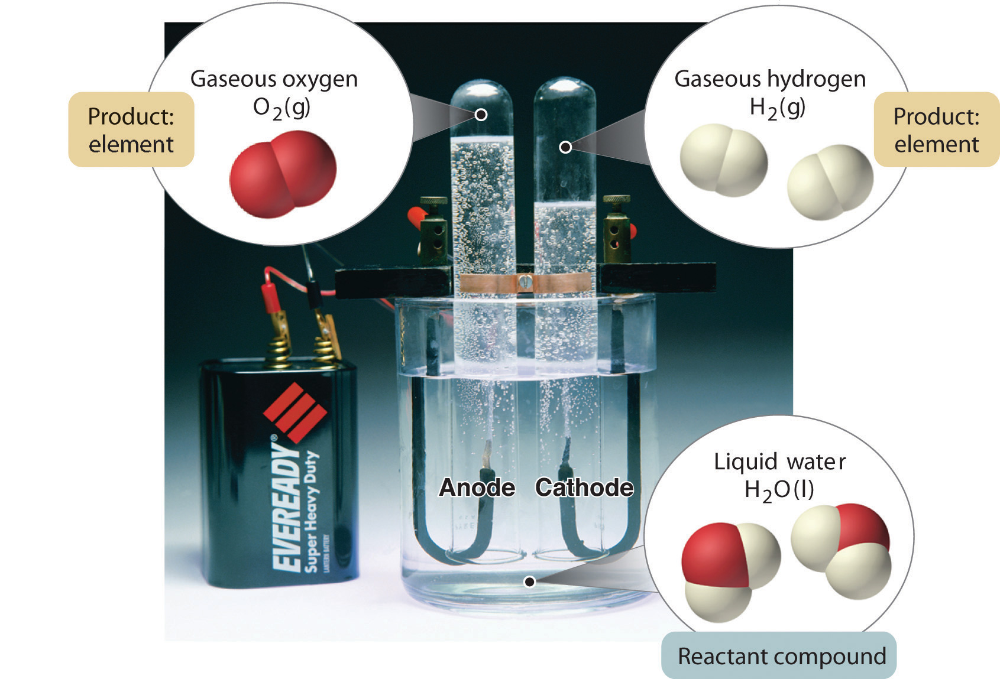
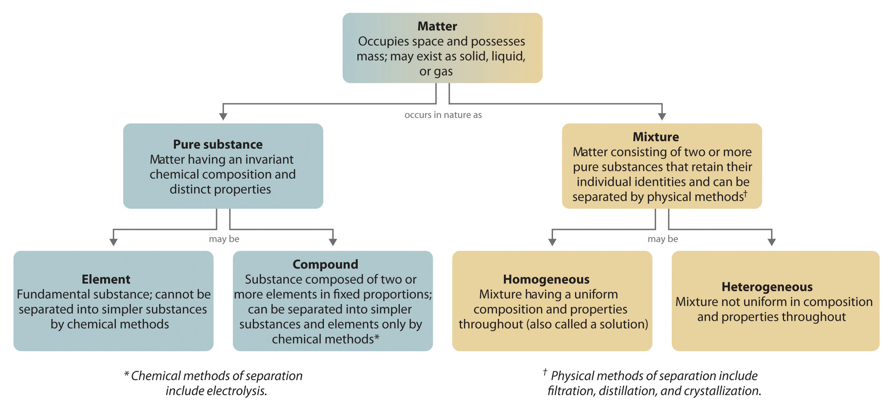
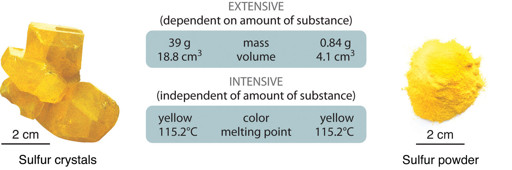

Chemists study the structures, physical properties, and chemical properties of material substances. These consist of matterAnything that occupies space and has mass., which is anything that occupies space and has mass. Gold and iridium are matter, as are peanuts, people, and postage stamps. Smoke, smog, and laughing gas are matter. Energy, light, and sound, however, are not matter; ideas and emotions are also not matter.
The massA fundamental property that does not depend on an object’s location; it is the quantity of matter an object contains. of an object is the quantity of matter it contains. Do not confuse an object’s mass with its weightA force caused by the gravitational attraction that operates on an object. The weight of an object depends on its location (c.f. mass)., which is a force caused by the gravitational attraction that operates on the object. Mass is a fundamental property of an object that does not depend on its location.In physical terms, the mass of an object is directly proportional to the force required to change its speed or direction. A more detailed discussion of the differences between weight and mass and the units used to measure them is included in Essential Skills 1 (Section 1.9 "Essential Skills 1"). Weight, on the other hand, depends on the location of an object. An astronaut whose mass is 95 kg weighs about 210 lb on Earth but only about 35 lb on the moon because the gravitational force he or she experiences on the moon is approximately one-sixth the force experienced on Earth. For practical purposes, weight and mass are often used interchangeably in laboratories. Because the force of gravity is considered to be the same everywhere on Earth’s surface, 2.2 lb (a weight) equals 1.0 kg (a mass), regardless of the location of the laboratory on Earth.
Under normal conditions, there are three distinct states of matter: solids, liquids, and gases (Figure 1.6 "The Three States of Matter"). SolidsOne of three distinct states of matter that, under normal conditions, is relatively rigid and has a fixed volume. are relatively rigid and have fixed shapes and volumes. A rock, for example, is a solid. In contrast, liquidsOne of three distinct states of matter that, under normal conditons, has a fixed volume but flows to assume the shape of its container. have fixed volumes but flow to assume the shape of their containers, such as a beverage in a can. GasesOne of three distinct states of matter that, under normal conditions, has neither a fixed shape nor a fixed volume and expands to completely fill its container., such as air in an automobile tire, have neither fixed shapes nor fixed volumes and expand to completely fill their containers. Whereas the volume of gases strongly depends on their temperature and pressureThe amount of force exerted on a given area. (the amount of force exerted on a given area), the volumes of liquids and solids are virtually independent of temperature and pressure. Matter can often change from one physical state to another in a process called a physical changeA change of state that does not affect the chemical composition of a substance.. For example, liquid water can be heated to form a gas called steam, or steam can be cooled to form liquid water. However, such changes of state do not affect the chemical composition of the substance.
Figure 1.6 The Three States of Matter

Solids have a defined shape and volume. Liquids have a fixed volume but flow to assume the shape of their containers. Gases completely fill their containers, regardless of volume.
A pure chemical substance is any matter that has a fixed chemical composition and characteristic properties. Oxygen, for example, is a pure chemical substance that is a colorless, odorless gas at 25°C. Very few samples of matter consist of pure substances; instead, most are mixturesA combination of two or more pure substances in variable proportions in which the individual substances retain their respective identities., which are combinations of two or more pure substances in variable proportions in which the individual substances retain their identity. Air, tap water, milk, blue cheese, bread, and dirt are all mixtures. If all portions of a material are in the same state, have no visible boundaries, and are uniform throughout, then the material is homogeneousA mixture in which all portions of a material are in the same state, have no visible boundaries, and are uniform throughout.. Examples of homogeneous mixtures are the air we breathe and the tap water we drink. Homogeneous mixtures are also called solutions. Thus air is a solution of nitrogen, oxygen, water vapor, carbon dioxide, and several other gases; tap water is a solution of small amounts of several substances in water. The specific compositions of both of these solutions are not fixed, however, but depend on both source and location; for example, the composition of tap water in Boise, Idaho, is not the same as the composition of tap water in Buffalo, New York. Although most solutions we encounter are liquid, solutions can also be solid. The gray substance still used by some dentists to fill tooth cavities is a complex solid solution that contains 50% mercury and 50% of a powder that contains mostly silver, tin, and copper, with small amounts of zinc and mercury. Solid solutions of two or more metals are commonly called alloys.
If the composition of a material is not completely uniform, then it is heterogeneousA mixture in which a material is not completely uniform throughout. (e.g., chocolate chip cookie dough, blue cheese, and dirt). Mixtures that appear to be homogeneous are often found to be heterogeneous after microscopic examination. Milk, for example, appears to be homogeneous, but when examined under a microscope, it clearly consists of tiny globules of fat and protein dispersed in water (Figure 1.7 "A Heterogeneous Mixture"). The components of heterogeneous mixtures can usually be separated by simple means. Solid-liquid mixtures such as sand in water or tea leaves in tea are readily separated by filtration, which consists of passing the mixture through a barrier, such as a strainer, with holes or pores that are smaller than the solid particles. In principle, mixtures of two or more solids, such as sugar and salt, can be separated by microscopic inspection and sorting. More complex operations are usually necessary, though, such as when separating gold nuggets from river gravel by panning. First solid material is filtered from river water; then the solids are separated by inspection. If gold is embedded in rock, it may have to be isolated using chemical methods.
Figure 1.7 A Heterogeneous Mixture

Under a microscope, whole milk is actually a heterogeneous mixture composed of globules of fat and protein dispersed in water.
Homogeneous mixtures (solutions) can be separated into their component substances by physical processes that rely on differences in some physical property, such as differences in their boiling points. Two of these separation methods are distillation and crystallization. DistillationA physical process used to separate homogeneous mixtures (solutions) into their component substances. Distillation makes use of differences in the volatilities of the component substances. makes use of differences in volatility, a measure of how easily a substance is converted to a gas at a given temperature. Figure 1.8 "The Distillation of a Solution of Table Salt in Water" shows a simple distillation apparatus for separating a mixture of substances, at least one of which is a liquid. The most volatile component boils first and is condensed back to a liquid in the water-cooled condenser, from which it flows into the receiving flask. If a solution of salt and water is distilled, for example, the more volatile component, pure water, collects in the receiving flask, while the salt remains in the distillation flask.
Figure 1.8 The Distillation of a Solution of Table Salt in Water

The solution of salt in water is heated in the distilling flask until it boils. The resulting vapor is enriched in the more volatile component (water), which condenses to a liquid in the cold condenser and is then collected in the receiving flask.
Mixtures of two or more liquids with different boiling points can be separated with a more complex distillation apparatus. One example is the refining of crude petroleum into a range of useful products: aviation fuel, gasoline, kerosene, diesel fuel, and lubricating oil (in the approximate order of decreasing volatility). Another example is the distillation of alcoholic spirits such as brandy or whiskey. This relatively simple procedure caused more than a few headaches for federal authorities in the 1920s during the era of Prohibition, when illegal stills proliferated in remote regions of the United States.
CrystallizationA physical process used to separate homogeneous mixtures (solutions) into their component substances. Crystallization separates mixtures based on differences in their solubilities. separates mixtures based on differences in solubility, a measure of how much solid substance remains dissolved in a given amount of a specified liquid. Most substances are more soluble at higher temperatures, so a mixture of two or more substances can be dissolved at an elevated temperature and then allowed to cool slowly. Alternatively, the liquid, called the solvent, may be allowed to evaporate. In either case, the least soluble of the dissolved substances, the one that is least likely to remain in solution, usually forms crystals first, and these crystals can be removed from the remaining solution by filtration. Figure 1.9 "The Crystallization of Sodium Acetate from a Concentrated Solution of Sodium Acetate in Water" dramatically illustrates the process of crystallization.
Figure 1.9 The Crystallization of Sodium Acetate from a Concentrated Solution of Sodium Acetate in Water

The addition of a small “seed” crystal (a) causes the compound to form white crystals, which grow and eventually occupy most of the flask (b).
Most mixtures can be separated into pure substances, which may be either elements or compounds. An elementA pure substance that cannot be broken down into a simpler substance by chemical changes., such as gray, metallic sodium, is a substance that cannot be broken down into simpler ones by chemical changes; a compoundA pure substance that contains two or more elements and has chemical and physical properties that are usually different from those of the elements of which it is composed., such as white, crystalline sodium chloride, contains two or more elements and has chemical and physical properties that are usually different from those of the elements of which it is composed. With only a few exceptions, a particular compound has the same elemental composition (the same elements in the same proportions) regardless of its source or history. The chemical composition of a substance is altered in a process called a chemical changeA process in which the chemical composition of one or more substances is altered.. The conversion of two or more elements, such as sodium and chlorine, to a chemical compound, sodium chloride, is an example of a chemical change, often called a chemical reaction. Currently, about 115 elements are known, but millions of chemical compounds have been prepared from these 115 elements. The known elements are listed in the periodic table (see Chapter 32 "Appendix H: Periodic Table of Elements").
In general, a reverse chemical process breaks down compounds into their elements. For example, water (a compound) can be decomposed into hydrogen and oxygen (both elements) by a process called electrolysis. In electrolysis, electricity provides the energy needed to separate a compound into its constituent elements (Figure 1.10 "The Decomposition of Water to Hydrogen and Oxygen by Electrolysis"). A similar technique is used on a vast scale to obtain pure aluminum, an element, from its ores, which are mixtures of compounds. Because a great deal of energy is required for electrolysis, the cost of electricity is by far the greatest expense incurred in manufacturing pure aluminum. Thus recycling aluminum is both cost-effective and ecologically sound.
Figure 1.10 The Decomposition of Water to Hydrogen and Oxygen by Electrolysis
Water is a chemical compound; hydrogen and oxygen are elements.
The overall organization of matter and the methods used to separate mixtures are summarized in Figure 1.11 "Relationships between the Types of Matter and the Methods Used to Separate Mixtures".
Figure 1.11 Relationships between the Types of Matter and the Methods Used to Separate Mixtures
Identify each substance as a compound, an element, a heterogeneous mixture, or a homogeneous mixture (solution).
Given: a chemical substance
Asked for: its classification
Strategy:
A Decide whether a substance is chemically pure. If it is pure, the substance is either an element or a compound. If a substance can be separated into its elements, it is a compound.
B If a substance is not chemically pure, it is either a heterogeneous mixture or a homogeneous mixture. If its composition is uniform throughout, it is a homogeneous mixture.
Solution:
Exercise
Identify each substance as a compound, an element, a heterogeneous mixture, or a homogeneous mixture (solution).
Answer:
All matter has physical and chemical properties. Physical propertiesA characteristic that scientists can measure without changing the composition of a sample under study. are characteristics that scientists can measure without changing the composition of the sample under study, such as mass, color, and volume (the amount of space occupied by a sample). Chemical propertiesThe characteristic ability of a substance to react to form new substances. describe the characteristic ability of a substance to react to form new substances; they include its flammability and susceptibility to corrosion. All samples of a pure substance have the same chemical and physical properties. For example, pure copper is always a reddish-brown solid (a physical property) and always dissolves in dilute nitric acid to produce a blue solution and a brown gas (a chemical property).
Physical properties can be extensive or intensive. Extensive propertiesA physical property that varies with the amount of a substance. vary with the amount of the substance and include mass, weight, and volume. Intensive propertiesA physical property that does not depend on the amount of the substance and physical state at a given temperature and pressure., in contrast, do not depend on the amount of the substance; they include color, melting point, boiling point, electrical conductivity, and physical state at a given temperature. For example, elemental sulfur is a yellow crystalline solid that does not conduct electricity and has a melting point of 115.2°C, no matter what amount is examined (Figure 1.12 "The Difference between Extensive and Intensive Properties of Matter"). Scientists commonly measure intensive properties to determine a substance’s identity, whereas extensive properties convey information about the amount of the substance in a sample.
Figure 1.12 The Difference between Extensive and Intensive Properties of Matter
Because they differ in size, the two samples of sulfur have different extensive properties, such as mass and volume. In contrast, their intensive properties, including color, melting point, and electrical conductivity, are identical.
Although mass and volume are both extensive properties, their ratio is an important intensive property called density (d)An intensive property of matter, density is the mass per unit volume (usually expressed in g/cm3). At a given temperature, the density of a substance is a constant.. Density is defined as mass per unit volume and is usually expressed in grams per cubic centimeter (g/cm3). As mass increases in a given volume, density also increases. For example, lead, with its greater mass, has a far greater density than the same volume of air, just as a brick has a greater density than the same volume of Styrofoam. At a given temperature and pressure, the density of a pure substance is a constant:
Equation 1.1
Pure water, for example, has a density of 0.998 g/cm3 at 25°C.
The average densities of some common substances are in Table 1.1 "Densities of Common Substances". Notice that corn oil has a lower mass to volume ratio than water. This means that when added to water, corn oil will “float.” Example 3 shows how density measurements can be used to identify pure substances.
Table 1.1 Densities of Common Substances
| Substance | Density at 25°C (g/cm3) |
|---|---|
| blood | 1.035 |
| body fat | 0.918 |
| whole milk | 1.030 |
| corn oil | 0.922 |
| mayonnaise | 0.910 |
| honey | 1.420 |
The densities of some common liquids are in Table 1.2 "Densities of Liquids in Example 3". Imagine you have five bottles containing colorless liquids (labeled A–E). You must identify them by measuring the density of each. Using a pipette, a laboratory instrument for accurately measuring and transferring liquids, you carefully measure 25.00 mL of each liquid into five beakers of known mass (1 mL = 1 cm3). You then weigh each sample on a laboratory balance. Use the tabulated data to calculate the density of each sample. Based solely on your results, can you unambiguously identify all five liquids?If necessary, review the use of significant figures in calculations in Essential Skills 1 (Section 1.9 "Essential Skills 1") prior to working this example.
Masses of samples: A, 17.72 g; B, 19.75 g; C, 24.91 g; D, 19.65 g; E, 27.80 g
Table 1.2 Densities of Liquids in Example 3
| Substance | Density at 25°C (g/cm3) |
|---|---|
| water | 0.998 |
| ethanol (the alcohol in beverages) | 0.789 |
| methanol (wood alcohol) | 0.792 |
| ethylene glycol (used in antifreeze) | 1.113 |
| diethyl ether (“ether”; once widely used as an anesthetic) | 0.708 |
| isopropanol (rubbing alcohol) | 0.785 |
Given: volume and mass
Asked for: density
Strategy:
A Calculate the density of each liquid from the volumes and masses given.
B Check to make sure that your answer makes sense.
C Compare each calculated density with those given in Table 1.2 "Densities of Liquids in Example 3". If the calculated density of a liquid is not significantly different from that of one of the liquids given in the table, then the unknown liquid is most likely the corresponding liquid.
D If none of the reported densities corresponds to the calculated density, then the liquid cannot be unambiguously identified.
Solution:
A Density is mass per unit volume and is usually reported in grams per cubic centimeter (or grams per milliliter because 1 mL = 1 cm3). The masses of the samples are given in grams, and the volume of all the samples is 25.00 mL (= 25.00 cm3). The density of each sample is calculated by dividing the mass by its volume (Equation 1.1). The density of sample A, for example, is
Both the volume and the mass are given to four significant figures, so four significant figures are permitted in the result. (See Essential Skills 1, Section 1.9 "Essential Skills 1", for a discussion of significant figures.) The densities of the other samples (in grams per cubic centimeter) are as follows: B, 0.7900; C, 0.9964; D, 0.7860; and E, 1.112.
B Except for sample E, the calculated densities are slightly less than 1 g/cm3. This makes sense because the masses (in grams) of samples A–D are all slightly less than the volume of the samples, 25.00 mL. In contrast, the mass of sample E is slightly greater than 25 g, so its density must be somewhat greater than 1 g/cm3.
C Comparing these results with the data given in Table 1.2 "Densities of Liquids in Example 3" shows that sample A is probably diethyl ether (0.708 g/cm3 and 0.7088 g/cm3 are not substantially different), sample C is probably water (0.998 g/cm3 in the table versus 0.9964 g/cm3 measured), and sample E is probably ethylene glycol (1.113 g/cm3 in the table versus 1.112 g/cm3 measured).
D Samples B and D are more difficult to identify for two reasons: (1) Both have similar densities (0.7900 and 0.7860 g/cm3), so they may or may not be chemically identical. (2) Within experimental error, the measured densities of B and D are indistinguishable from the densities of ethanol (0.789 g/cm3), methanol (0.792 g/cm3), and isopropanol (0.785 g/cm3). Thus some property other than density must be used to identify each sample.
Exercise
Given the volumes and masses of five samples of compounds used in blending gasoline, together with the densities of several chemically pure liquids, identify as many of the samples as possible.
| Sample | Volume (mL) | Mass (g) |
|---|---|---|
| A | 337 | 250.0 |
| B | 972 | 678.1 |
| C | 243 | 190.9 |
| D | 119 | 103.2 |
| E | 499 | 438.7 |
| Substance | Density (g/cm3) |
|---|---|
| benzene | 0.8787 |
| toluene | 0.8669 |
| m-xylene | 0.8684 |
| isooctane | 0.6979 |
| methyl t-butyl ether | 0.7405 |
| t-butyl alcohol | 0.7856 |
Answer: A, methyl t-butyl ether; B, isooctane; C, t-butyl alcohol; D, toluene or m-xylene; E, benzene
Matter is anything that occupies space and has mass. The three states of matter are solid, liquid, and gas. A physical change involves the conversion of a substance from one state of matter to another, without changing its chemical composition. Most matter consists of mixtures of pure substances, which can be homogeneous (uniform in composition) or heterogeneous (different regions possess different compositions and properties). Pure substances can be either chemical compounds or elements. Compounds can be broken down into elements by chemical reactions, but elements cannot be separated into simpler substances by chemical means. The properties of substances can be classified as either physical or chemical. Scientists can observe physical properties without changing the composition of the substance, whereas chemical properties describe the tendency of a substance to undergo chemical changes (chemical reactions) that change its chemical composition. Physical properties can be intensive or extensive. Intensive properties are the same for all samples; do not depend on sample size; and include, for example, color, physical state, and melting and boiling points. Extensive properties depend on the amount of material and include mass and volume. The ratio of two extensive properties, mass and volume, is an important intensive property called density.
Please be sure you are familiar with the topics discussed in Essential Skills 1 (Section 1.9 "Essential Skills 1") before proceeding to the Conceptual Problems.
What is the difference between mass and weight? Is the mass of an object on Earth the same as the mass of the same object on Jupiter? Why or why not?
Is it accurate to say that a substance with a mass of 1 kg weighs 2.2 lb? Why or why not?
What factor must be considered when reporting the weight of an object as opposed to its mass?
Construct a table with the headings “Solid,” “Liquid,” and “Gas.” For any given substance, state what you expect for each of the following:
Classify each substance as homogeneous or heterogeneous and explain your reasoning.
Classify each substance as homogeneous or heterogeneous and explain your reasoning.
Classify each substance as a pure substance or a mixture and explain your reasoning.
Classify each substance as a pure substance or a mixture.
Classify each substance as an element or a compound.
Classify each substance as an element or a compound.
What techniques could be used to separate each of the following?
What techniques could be used to separate each of the following?
Match each separation technique in (a) with the physical/chemical property that each takes advantage of in (b).
The following figures illustrate the arrangement of atoms in some samples of matter. Which figures are related by a physical change? By a chemical change?
Classify each statement as an extensive property or an intensive property.
Classify each statement as a physical property or a chemical property.
Please be sure you are familiar with the topics discussed in Essential Skills 1 (Section 1.9 "Essential Skills 1") before proceeding to the Numerical Problems.
If a person weighs 176 lb on Earth, what is his or her mass on Mars, where the force of gravity is 37% of that on Earth?
If a person weighs 135 lb on Earth, what is his or her mass on Jupiter, where the force of gravity is 236% of that on Earth?
Calculate the volume of 10.00 g of each element and then arrange the elements in order of decreasing volume. The numbers in parentheses are densities.
Given 15.00 g of each element, calculate the volume of each and then arrange the elements in order of increasing volume. The numbers in parentheses are densities.
A silver bar has dimensions of 10.00 cm × 4.00 cm × 1.50 cm, and the density of silver is 10.49 g/cm3. What is the mass of the bar?
Platinum has a density of 21.45 g/cm3. What is the mass of a platinum bar measuring 3.00 cm × 1.50 cm × 0.500 cm?
Complete the following table.
| Density (g/cm3) | Mass (g) | Volume (cm3) | Element |
|---|---|---|---|
| 3.14 | 79.904 | Br | |
| 3.51 | 3.42 | C | |
| 39.1 | 45.5 | K | |
| 11.34 | 207.2 | Pb | |
| 107.868 | 10.28 | Ag | |
| 6.51 | 14.0 | Zr |
Gold has a density of 19.30 g/cm3. If a person who weighs 85.00 kg (1 kg = 1000 g) were given his or her weight in gold, what volume (in cm3) would the gold occupy? Are we justified in using the SI unit of mass for the person’s weight in this case?
An irregularly shaped piece of magnesium with a mass of 11.81 g was dropped into a graduated cylinder partially filled with water. The magnesium displaced 6.80 mL of water. What is the density of magnesium?
The density of copper is 8.92 g/cm3. If a 10.00 g sample is placed in a graduated cylinder that contains 15.0 mL of water, what is the total volume that would be occupied?
At 20°C, the density of fresh water is 0.9982 kg/m3, and the density of seawater is 1.025 kg/m3. Will a ship float higher in fresh water or in seawater? Explain your reasoning.
Unlike weight, mass does not depend on location. The mass of the person is therefore the same on Earth and Mars: 176 lb ÷ 2.2 lb/kg = 80 kg.
Volume decreases: Ca > Ti > Cu > Ir
629 g
1.74 g/cm3